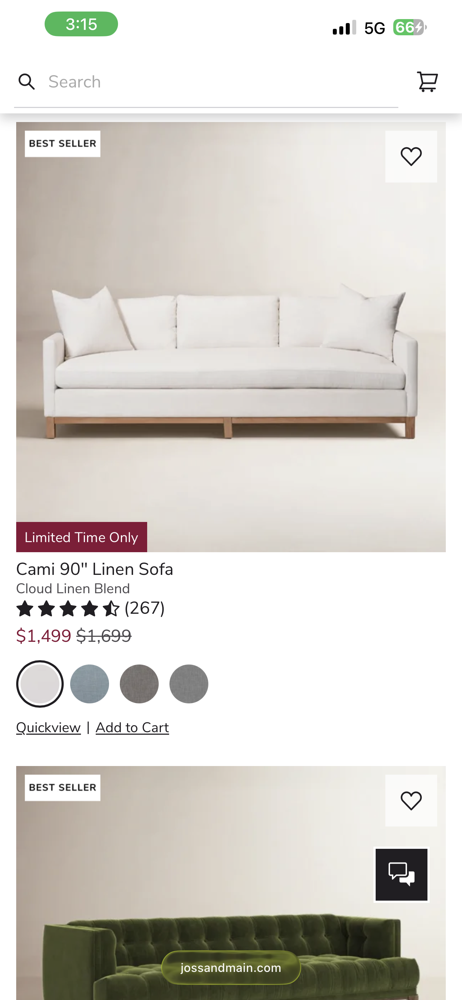
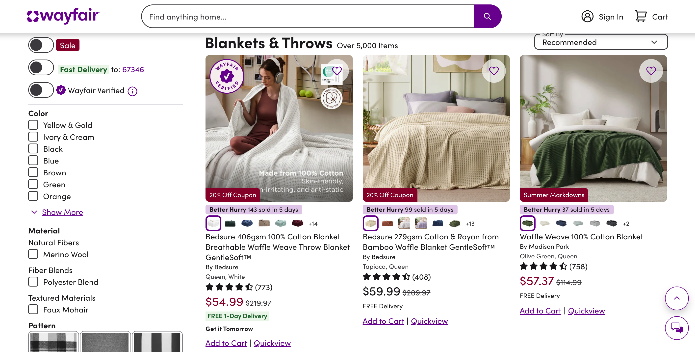
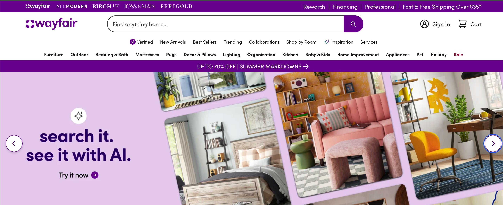
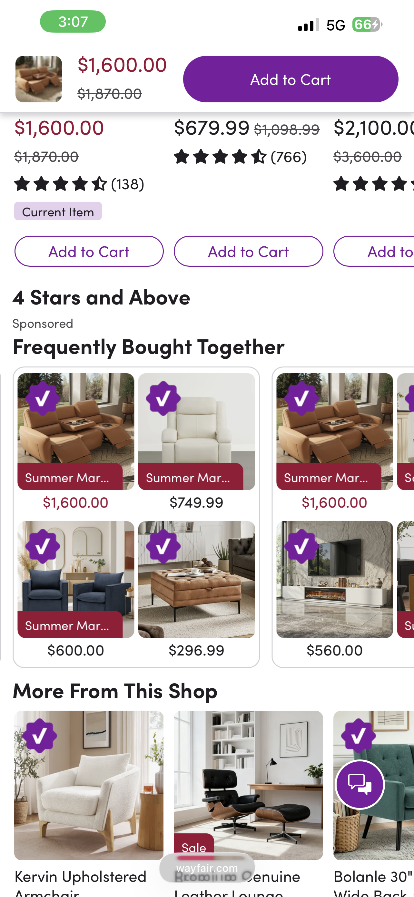
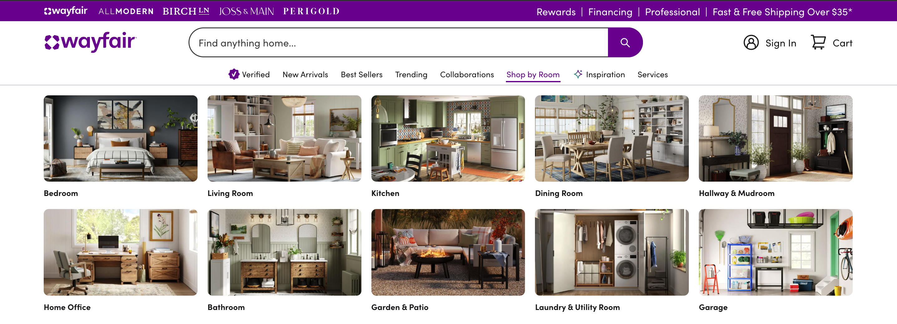

A navigation and product-discovery overhaul, styled around information density.
Revamped key flows across Wayfair.com's web experience, restructuring navigation and product discovery around a bento-box layout — compact, modular info cards inspired by the high-density UI patterns common on Chinese e-commerce platforms like Taobao and JD.com. The result: more information visible at a glance, without sacrificing visual hierarchy or overwhelming the user.
Western e-commerce tends to default to a lot of whitespace and one hero product at a time. Chinese e-commerce UI takes the opposite bet: dense, modular cards that surface price, rating, delivery window, and variant options all at once, relying on strong visual hierarchy — not empty space — to keep it scannable. Applying that logic to Wayfair meant reworking the grid system itself, not just restyling existing components.





Wayfair.com UX revamp — bento gallery.
Density isn't clutter when the hierarchy is doing its job.